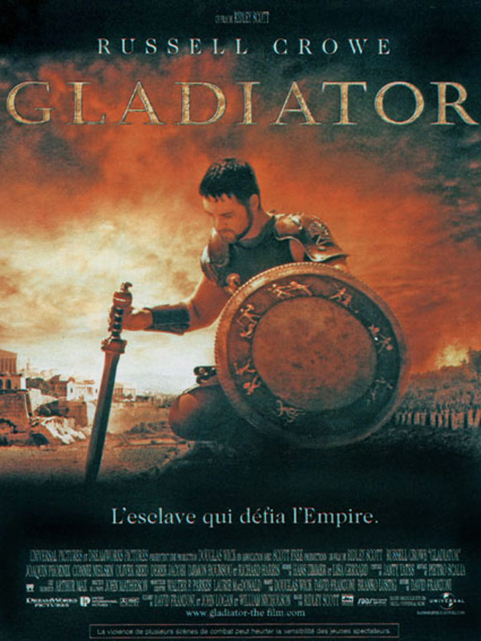
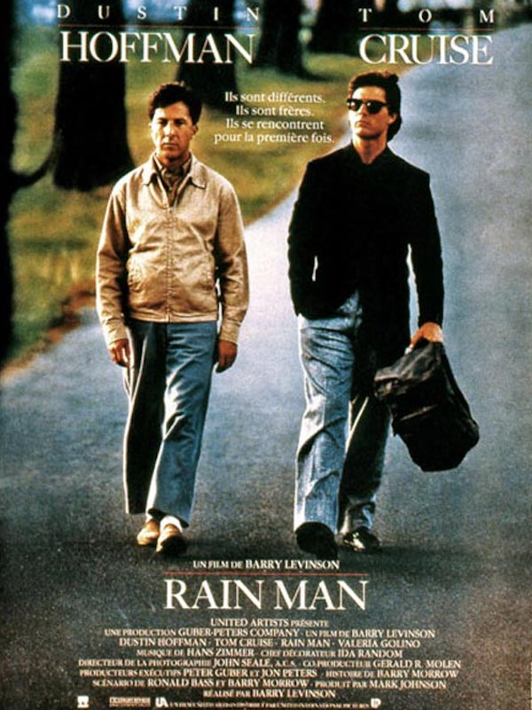

Akram Dhane
Founder @JasmineHall
I founded Jasmine Hall, one of the first coworking spaces in Tunisia.
As I aim to create the best coworking experience ever, I have to pimp my space by providing some cool stuff to my coworkers.
My Favorite movies
|  |
GladiatorLe général romain Maximus est le plus fidèle soutien de l'empereur Marc Aurèle, qu'il a conduit de victoire en victoire avec une bravoure et un dévouement exemplaires. Jaloux du prestige de Maximus, et plus encore de l'amour que lui voue l'empereur, le fils de MarcAurèle, Commode, s'arroge brutalement le pouvoir, puis ordonne l'arrestation du général et son exécution. Maximus échappe à ses assassins mais ne peut empêcher le massacre de sa famille. Capturé par un marchand d'esclaves, il devient gladiateur et prépare sa vengeance. |
|  |
RainmanA la mort de son père, Charlie Babbitt, homme d'affaires pressé, hérite d'une vieille Buick qu'il convoitait depuis longtemps mais se voit spolié de quelque trois millions de francs versés à l'Institution psychiatrique Wallbrook au profit d'un bénéficiaire anonyme. Charlie se rend a Wallbrook et découvre l'heureux bénéficiaire. Il s'agit de Raymond, savant autiste, celui qu'il appelait dans son enfance Rain Man, qui représente ses seuls souvenirs heureux et qui n'est autre que son frère. |

|
RayRay Charles, c'est d'abord un mythe : cinq décennies de succès, une carrière musicale exceptionnellement riche, féconde et diverse, émaillée de dizaines de classiques qui ont fait le tour du monde et inspiré des générations de jeunes artistes. Mais derrière cette image légendaire se profile l'histoire émouvante, méconnue, d'une vie, l'itinéraire d'un homme qui réussit à surmonter ses handicaps et ses drames personnels. |